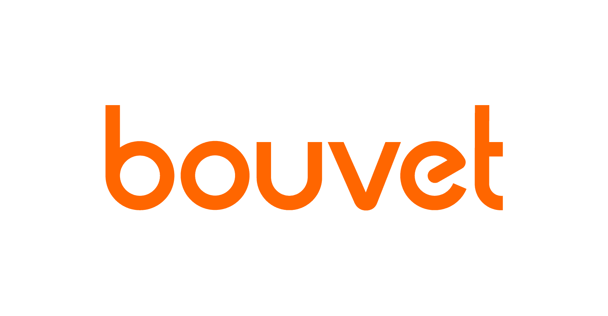
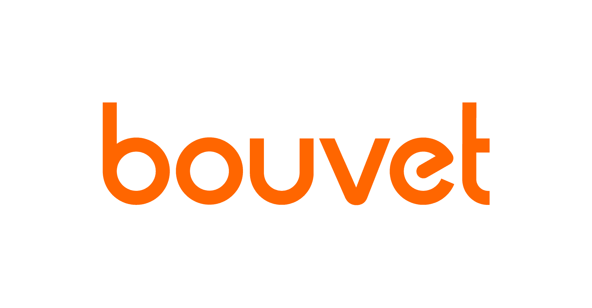
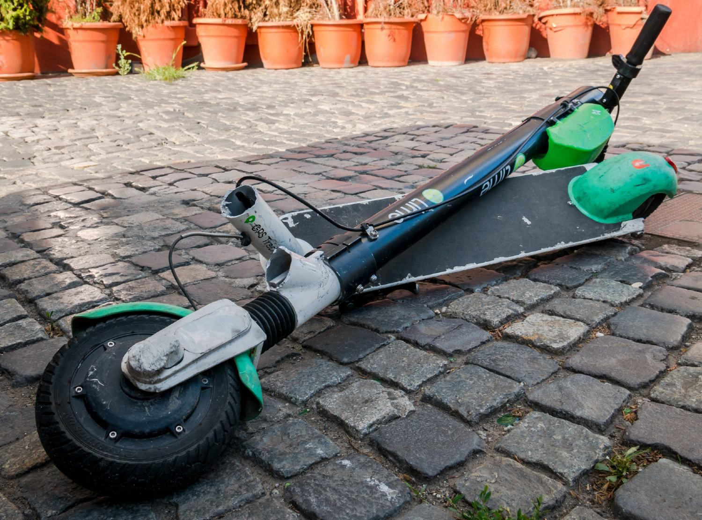
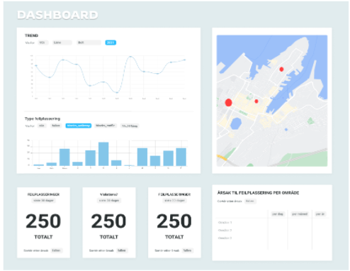
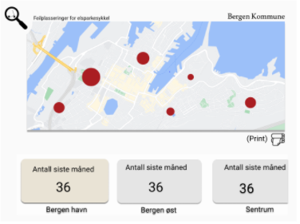
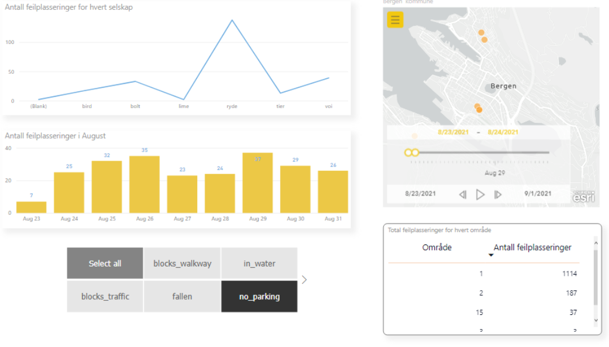
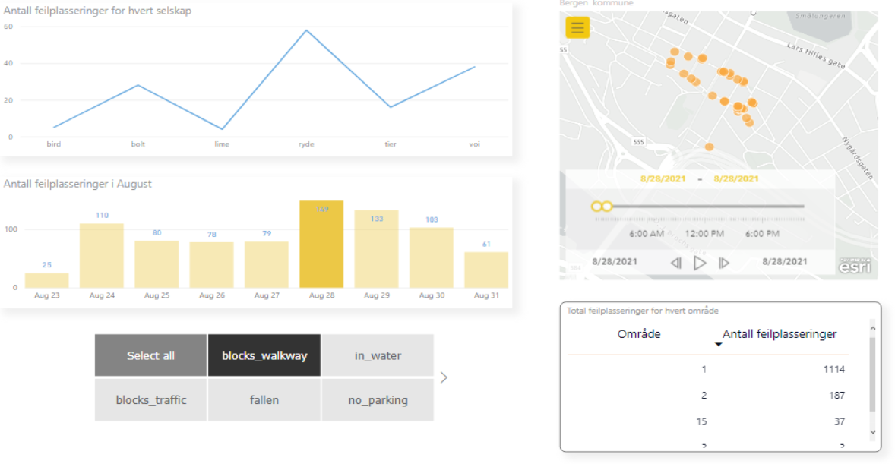

Microsoft student hackathon 2021
An virtual event organized by Microsoft with Atea Norge As, Bouvet ASA and Computas AS (3.- 5.September)
 

I participated in this event out of sheer curiosity and because i saw an opportunity to truly challenge my programming and design skills for a couple of days. The solution was to be created in Microsoft Power Platforms. As this was my first hackathon, I had no previous knowledge of how the event would play out. I got assigned to a team with two others (with backgrounds in marketing and programming), and spent the following days getting to know each other and working togheter on producing and finally present our solution.
Case
Our team chose to work with the case provided by Bouvet:
Make a solution for Bergen Commune to gain insight, control and overview
of electric scooters in the municipality
With the data provided by the available API, we chose to narrow down the case into our problem statement:

Requirements
With the limited amount of resources given to us, we started by exploring the API and related articles surrounding the topic. Through our research we discovered that:
- The commune has substantial amount of governing authority on private companies delivering electric scooter
- There are several different ways that these scooters are being misplaced/damaged (tipped over, blocking walkway, etc...)
We proceeded with defining these requirements for our solution:
Solution shows information on which companies the misplaced scooters belong to Solution shows information on what type of violation has occured Solution shows information on the amount of violations which have occured in a given timeframe
Layout
On the next step of our project, we spent some time working collaboratively on Figma to produce several wireframes to visualize the desired layout. We favoured three layouts (shown under) out of a few, with more time and more resources, we could have done this as a evaluation stage togheter with Bergen commune.
Then we produced more refined wireframes
 
Solution
For the rest of our remaining time, the team spent on learning and creating our solution on Power BI. The final outcome is a dashboard created for Bergen Commune where they have a clear overview of all violations occuring to el-scooters located around the city. The dashboard presents a graph showing number of incidents for each company, a map visualizer with several dots marking where the scooters are, a table showing the number of incidents for each area. The button menu enables the user to choose which type of incident to focus on, and this is made simple due to all of the graphs working together insync.
 
Feedback and reflection
A couple of things could be improved.
Change of the variable names allowing for a cleaner UI.
Connecting the solution from Power BI into other Power platforms such as Power Apps and
Power automate.